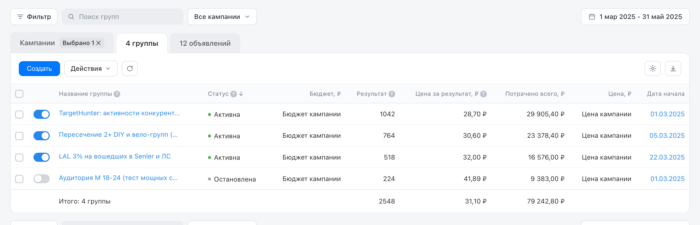
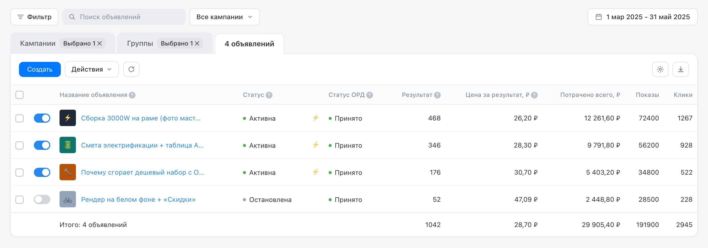
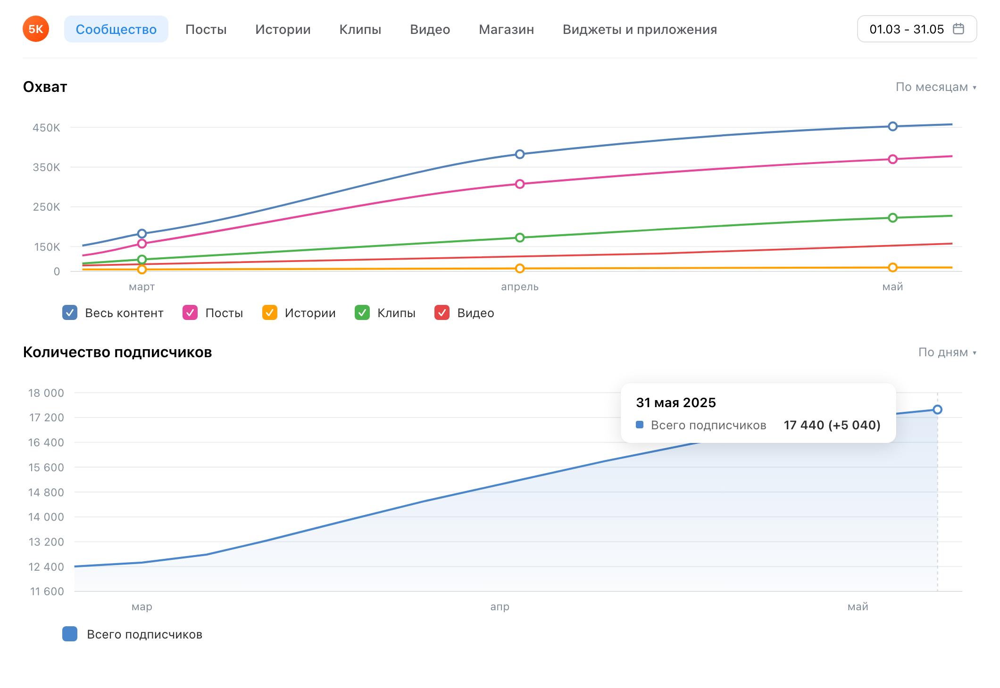

Что будет, если впервые за 10 лет запустить рекламу на привлечение подписчиков в ВК?
Кейс «5 КИЛОВАТТ» в новом кабинете VK Реклама (ads.vk.com): 5 250 вступлений ровно по 35,00 ₽ (+5 040 чистых подписчиков) за 3 месяца в группу электровелосипедов и наборов для электрификации.
Инструменты & Стек
VK Реклама (новый кабинет ads.vk.com: Кампании, Группы, Объявления, ОРД, цель «Подписка на сообщество»), TargetHunter (парсинг активностей и пересечений у 42 конкурентов), Senler (лид-магнит и авто-прогрев), статистика сообщества ВК
Карточка проекта (TL;DR за 3 месяца)
- Подписки в VK Ads
- 5 250
- Цена результата: 35,00 ₽
- Чистый прирост группы
- +5 040
- База: 12 400 → 17 440 (+40,6%)
- Потрачено всего
- 183 750 ₽
- 1 март - 31 май 2025 (92 дня)
- Конвертация в воронку
- 1 840 / 294
- Подписок в Senler / расчётов в ЛС

Точка А: 10 лет без таргета и усталость старой базы
«5 КИЛОВАТТ» работает на рынке мощного электротранспорта больше десяти лет. Продукт магазина делится на две категории: готовые мощные электровелосипеды (средний чек 95 000 - 240 000 ₽) и комплекты для самостоятельной электрификации обычных велосипедов (мотор-колёса 500W - 5000W, контроллеры, BMS и аккумуляторы, средний чек 32 000 - 75 000 ₽). Цикл сделки длинный: от 2 недель до 3 месяцев.
Парадокс в том, что за 10 лет существования группы ВКонтакте туда ни разу не запускали системную рекламу на привлечение подписчиков. Аудитория в 12 400 человек собралась исключительно органически: с YouTube, тематических форумов и переходов с сайта.
- Спад органики: значительная часть старой базы собрала свой электробайк много лет назад, а алгоритмическая лента ВК резала охваты постов до 12-15% от числа участников.
- Негативный опыт с кнопкой «Продвигать»: редкие попытки самостоятельно продвинуть пост со стены без парсинга и минусации приносили единичных подписчиков по 140-180 ₽.
- Задача на весенний сезон: раскачать сообщество в новом кабинете VK Реклама, привести минимум +5 000 целевых подписчиков не дороже 35-40 ₽ за вступление и сразу переводить их в расчёт сборки.
Подготовка площадки и связка с Senler до старта трафика
Гнать холодный трафик в техническую группу без понятной навигации бессмысленно: новичок пугается терминов вроде «дропауты 135 мм», «ток BMS» или «ячейки 21700» и выходит через пару дней. Перед запуском рекламы пересобрали точку входа:
- Упаковка под первый визит: обновили обложку с чётким позиционированием (наборы электрификации и байки с техподдержкой по РФ), вычистили меню и закрепили пост-навигатор «Как выбрать свой первый комплект и не сжечь контроллер».
- Лид-магнит в Senler: в меню и закреп поставили виджет чат-бота, который выдаёт «Таблицу совместимости мотор-колеса, контроллера и АКБ под вес райдера и желаемую скорость».
- 4-шаговый авто-дожим: после скачивания таблицы бот уточняет сценарий (город, бездорожье или курьерская работа), отвечает на частые вопросы и переводит пользователя в сообщения сообщества на бесплатную проверку совместимости под его раму.
Сегментация ЦА по Лестнице Ханта: разбор кампаний и групп
Главная сложность электротранспорта в новом кабинете VK Ads: если выбрать стандартные интересы «Велосипеды» или не почистить контекст, алгоритм за пару часов уходит в аудиторию прогулочных великов и детских самокатов. Поэтому трафик сразу развели по уровню теплоты:
- Горячий спрос (Ищут сейчас): кампания
5квт: Контекстс периодом поиска 14 дней по ключаммотор колесо купить,набор электровелосипеда,аккумулятор 48v/72vи списком из 180+ минус-слов (самокат, гироскутер, детский, авито б/у). Итог: 1 712 вступлений по 34,60 ₽. - Тёплая база и прямые конкуренты (Локомотив): кампания
5квт: РК на подписку (TargetHunter + LAL 3%)принесла 2 548 вступлений по 31,10 ₽. Сюда через TargetHunter собрали активных участников 42 конкурентных и DIY-сообществ, пересечения от 2+ вело-групп и Look-a-Like 3% на тех, кто уже зашёл в Senler. - Вороночный прогрев через гайд: кампания
5квт: Гайды + Senlerна посетителей сайта и тёплые базы с заходом «подпишись и забери подборку конфигов». Итог: 824 вступления по 34,50 ₽.

Креативы и A/B-тест: почему ТТХ из мастерской победили глянец
В самом интерфейсе VK Рекламы пользователь видит сначала картинку, сразу под ней синюю кнопку Вступить ›, и только ниже текст объявления. Поэтому первые 2 секунды решает именно визуал с цифрами на баннере.
Мы сравнили «магазинный» подход на широкую аудиторию (студийные рендеры велосипедов на белом фоне с текстом про скидки) против инженерных заходов от лица мастерской. Рендеры давали CTR 0,80% и вступления по 47,09 - 101,47 ₽, тогда как рабочие сборки из мастерской пробивали баннерную слепоту с CTR 1,50 - 1,75%.


Технические настройки нового кабинета VK Реклама
- Стратегия ставок: на старте запускали кампании на «Минимальной цене» с оптимизацией бюджета на уровне кампании (
⚡), чтобы алгоритм сам переливал дневной лимит 600 - 1 200 ₽ в группы с самым дешёвым вступлением. - Адаптивные кадрирования: под каждое объявление-чемпион загружали 3 формата (1:1, 4:3 и 16:9), чтобы корректно выкупать ленту ВК, клиповые плейсменты и сетку проектов Mail.ru без обрезки ТТХ.
- Контроль частоты и исключение базы: в исключения всегда ставили текущих подписчиков сообщества и скрывших рекламу, чтобы не платить повторно за лояльное старое ядро.
Факапы по ходу 3 месяцев и как удержали 35,00 ₽
Без провалов такие объёмы в узкой технической нише не собираются. По ходу квартала пришлось остановить два сливных направления и решить одну проблему выгорания:
- Слив первой недели на широкую РФ + рендеры (16 844 ₽): на старте параллельно запустили тест широкой аудитории с авто-подбором интересов и каталожными фото. Результат оказался провальным: 166 подписок по 101,47 ₽. Кампанию полностью остановили, сэкономив бюджет на масштабирование контекста и TargetHunter.
- Кликающая, но не покупающая молодёжь 18-24: внутри группы конкурентов выделили сегмент 18-24 под мощные конфиги 78 км/ч. Кликали охотно, но итоговая цена подписки уползла к 41,89 ₽ (против 28,70 - 30,60 ₽ у мужчин 25-55 лет), а в Senler эта когорта почти не заходила. Группу отключили после 224 подписок.
- Выгорание ядра конкурентов на 5-й неделе: когда частота показов в узком парсинге перешла за 3,7, цена подписки подскочила с 27 ₽ до 38 ₽. Вырулили за счёт свежих фото сборок каждые 12-14 дней и подключения группы с Look-a-Like 3% на тех, кто уже задавал вопросы в Senler и ЛС.
Итоговые результаты и статистика сообщества
С учётом остановленного теста первой недели общий расход за 3 месяца (1 марта - 31 мая 2025) составил ровно 183 750,00 ₽, а количество целевых действий в кабинете VK Реклама - 5 250 вступлений по средней цене 35,00 ₽.
| Кампания в VK Реклама | Статус | Дневной бюджет | Вступления | Цена рез. | Потрачено всего |
|---|---|---|---|---|---|
| 5квт: РК на подписку (TargetHunter + LAL 3%) | Активна ⚡ | 1 200,00 ₽ | 2 548 | 31,10 ₽ | 79 242,80 ₽ |
| 5квт: Контекст (мотор-колёса и наборы) | Активна ⚡ | 1 000,00 ₽ | 1 712 | 34,60 ₽ | 59 235,20 ₽ |
| 5квт: Гайды + Senler (подбор АКБ) | Активна ⚡ | 600,00 ₽ | 824 | 34,50 ₽ | 28 428,00 ₽ |
| 5К: Тест широкая + рендеры (Стоп) | Остановлена | Бюджет группы | 166 | 101,47 ₽ | 16 844,00 ₽ |
| Итого по кабинету (4 кампании) | - | - | 5 250 | 35,00 ₽ | 183 750,00 ₽ |

Главные выводы и «Растём дальше»
1. Даже 10-летнее сообщество можно заново «разбудить» за один квартал: чистый прирост +40,6% к базе оживил органические охваты старых постов и дал 1 840 подписок в Senler плюс 294 прямых обращения на расчёт сборок в ЛС.
2. В технических нишах побеждает конкретика под кнопкой «Вступить»: честные цифры мощности, вольтажа и реальные фото мастерской снизили стоимость подписчика с 101,47 ₽ до 26,20 - 34,60 ₽.
3. Растём дальше: все три основные кампании продолжают крутиться в активном режиме с плановым удержанием цены вступления 31 - 35 ₽, а на собранные 5 000+ свежих участников дополнительно работают дожимы по сезонным акциям.